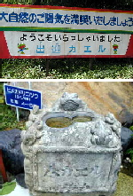
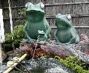
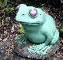
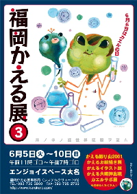

富山山中に謎のカエル聖域を発見！ 【富山発=杉原秀圭延喜式内杉原神社禰宜様】以前から気になっていたのですが、富山県某所に道路脇にずらりとカエルが並んでいる所があるのです。某薬品会社の工場へと続く道なのですが、その数なんと１００匹近く、４〜５ｍおきに並んでいます。
 その後、調査を敢行しましたところ、カエルはこれだけではなかったのです。カエル行列の始点には、「出迎カエル」という大きな看板が。さらにはミネラルウォーターの紹介を兼ねた「カエル水場」まであるではないですか。おまけに狛犬さんまで鎮座しています。これらの他にも道沿いの建物や池には大きなカエルが何匹も見受けられました。
 聞くところによると、この会社周辺の山一体が漢方薬用の薬草研究の施設になっているとのこと。また、某教派神道の研修所もあることが判明。でも、なぜカエル？社長がカエル好きなのでしょうか？カエルを漢方薬として使ってる？カエルを拝んでいたら会社が成功した？などなど理由は定かではありません。カエル寺ならぬ「カエル製薬会社」、謎は深いようです。
日本三大カエル聖域に指定【全国かえる奉賛会】深山に聖域のごとく出現するカエル地帯！これは謎です。カエル１００匹級といえば、福岡県小郡市のカエル寺、三重県二見が浦とともに、日本三大カエル聖域に指定するぞ。全国のカエラーは、黄金週間の全力をあげて、カエル参りにでかけようではないかあああ。福岡かえる展３ポスター完成！ 【福岡かえる展３実行委員会】今年も６月６日のカエル記念日を祝祭するため、６月５日から１０日まで、福岡市中央区大名１丁目「エンジョイスペース大名」を会場に、記念日前後に『第３回福岡かえる展』を開催することが決定。このほど、かえる展３の公式ポスターが完成した。今回のポスター製作は、かえるサボテン少女改め、かえるサボテン姫製作によるもので、イラストとポスターレイアウトをともにこなして作ってくれたあ。副題は、実行委員長みずから、イラストレータをあやつり生み出した『井の中の蛙 世界征服を望む』である。
かえるサボテン姫同志が実行委員長に！【福岡かえる展３実行委員会】全国かえる奉賛会は、今年の６月に開催する福岡かえる展３の実行委員長に、かえるサボテン姫同志を指名した。全国のカエラー諸君。かえるサボテンの通販を通じて、実行委員長の「癒し系」キャラクターは、すでに承知している人も多いであろう。かえるサボテン姫のもとに、今年の福岡かえる展３を成功させようではないかああああ。 実行委員長就任記念！カエルサボテン３体を近日発売！【ケロ天市場】けろテン市場では、カエルサボテン姫の福岡かえる展３の実行委員長就任を記念し、カエルサボテン３体を近日発売することにしている。この連休前後に、発売開始するので、連休を自宅でごろごろ過ごしている人は、運がよいぞおお。
投稿採用者に武功カエル徽章を授与！ |
かえる古新聞過去に取り上げた記事を見出し付きで一覧したい人は、ここをクリック◆創刊号を見る◆先週号を見る◆話題の号を見る◆かえる新聞の昔を読む◆COOL NET FROG RANKING !
|
私も入っています。。全国かえる奉賛会
大王様に会うには、このバナーをクリック。ずっと奥に写真館があるぞ。全国かえる奉賛会に入会するには、自分のホームページのどこかに、下の部分を追加するとバナーがリンク付きで表示されるぞ。どんどん入会しましょー |


|